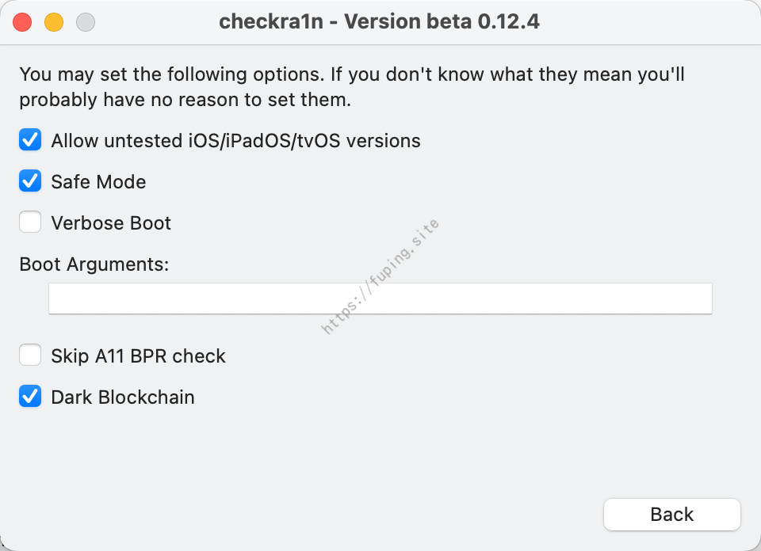
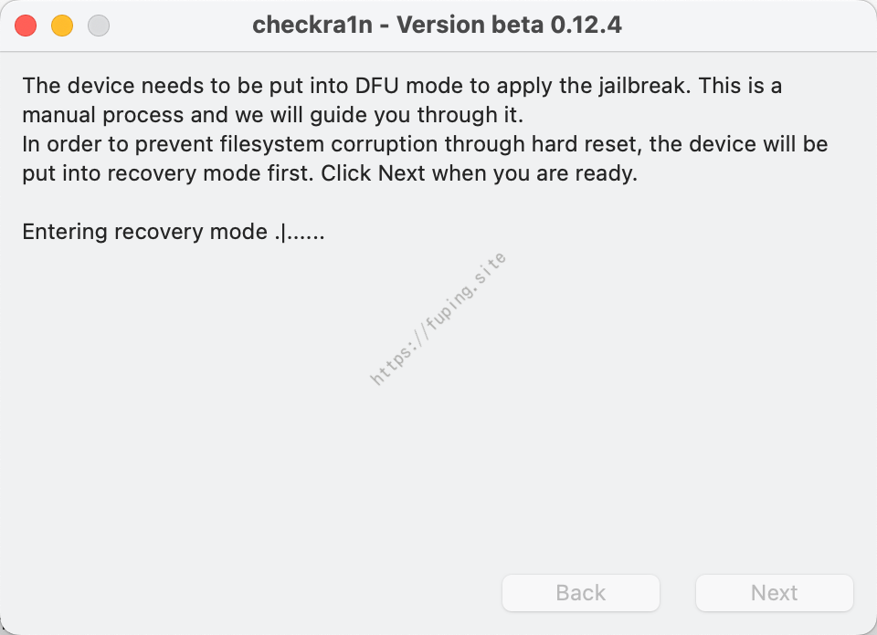
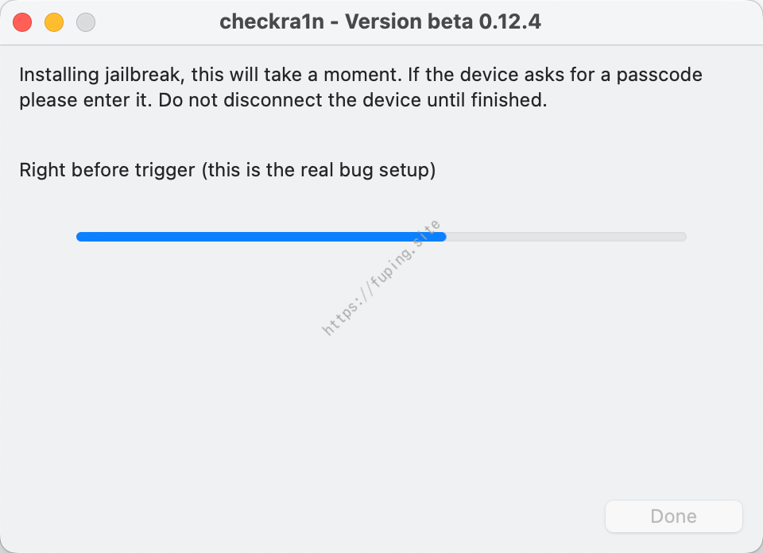
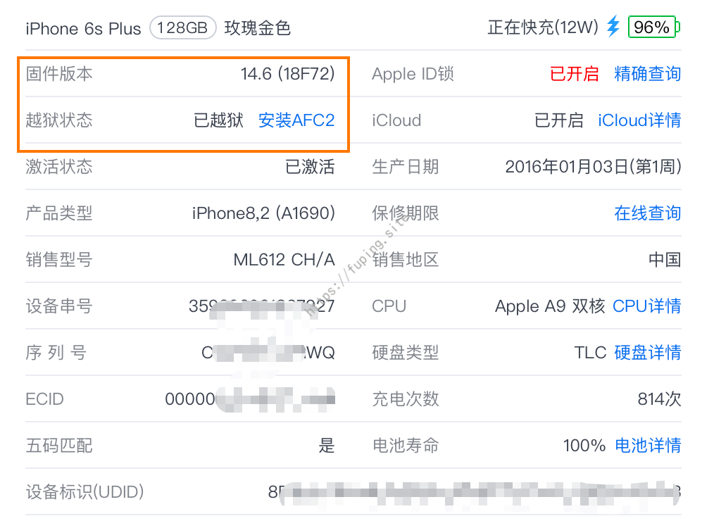
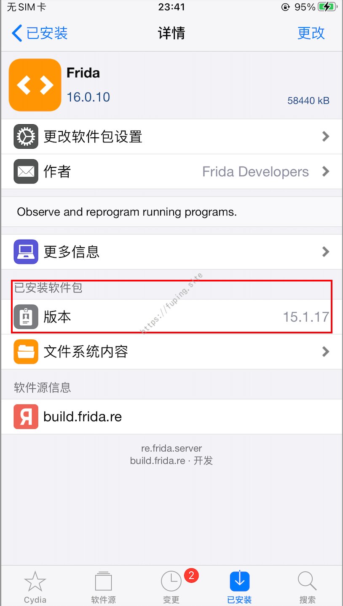
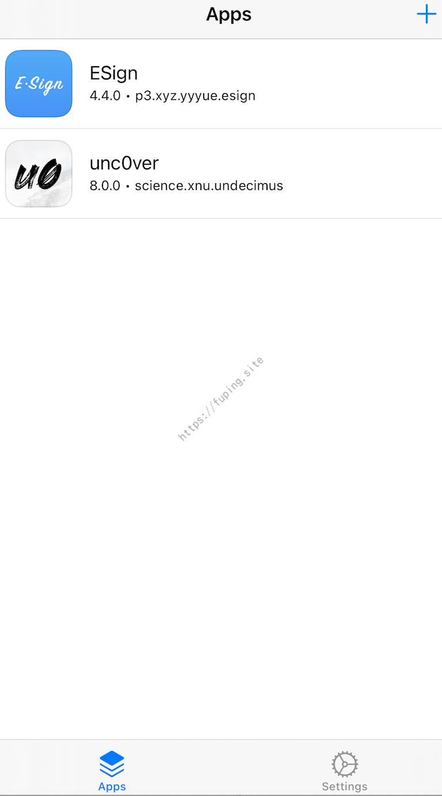

【IOS逆向】越狱环境搭建
0x00前言
由于之前用的手机是IPhone6s，版本是12.4，有一些APP打开会直接闪退，于是换了一部6sp，版本是14.6。对其进行越狱，安装一些所需要的插件，并记录一下过程。
0x01 使用checkra1n越狱
一般常用的是unc0ver或者checkra1n进行越狱，前者的稍微简单一点，后者稍微复杂一些。
这里本打算直接使用unc0ver进行越狱，结果安装后提示不支持。
于是这里使用checkra1n进行越狱。
打开checkra1n虽然提示不支持14.6，这里Start按钮是灰色的。
选择Options

勾选前两项。然后点击Back返回。此时Start按钮就可以使用了。
手机进入恢复模式

根据提示进行越狱
点Start按钮
然后一起按着关机键和Home键
倒计时结束松开关机键，仍然按着Home键。然后等待即可

等手机重启后就进入了越狱模式。

非完美越狱，重启后仍需重新越狱。
使用checkra1n越狱后，需要手动安装cydia，之后才可以进行插件的安装。
0x02 插件安装
安装cydia
Cydia是一款用于iOS设备（如iPhone和iPad）的第三方应用商店，允许用户下载、安装和管理未经授权的应用程序、扩展和主题。
在checkra1n中安装cydia
网络问题可以挂上科学。
安装ssh
打开Cydia应用商店，搜索openssh，然后安装即可。
安装后可以使用ssh进行访问，默认密码alpine
可以使用
iproxy 2222 22将手机的22端口转发到2222端口。
安装FlyJB X 屏蔽越狱检测插件
添加雷锋软件源http://apt.abcydia.com，搜索FlyJB
安装frida
添加源https://build.frida.re/,然后搜索frida
安装其它版本的frida可以从github下载所需的frida安装包，然后通过命令安装。例如安装15.1.17版本的Frida。
下载deb文件
https://github.com/frida/frida/releases?page=3
1 | scp -P2225 frida_15.1.17_iphoneos-arm.deb root@localhost:/tmp |

安装SSLKillSwitch
SSLKillSwitch是ios中常用解除SSL pining的插件。
https://github.com/nabla-c0d3/ssl-kill-switch2
1 | wget https://github.com/nabla-c0d3/ssl-kill-switch2/releases/download/0.14/com.nablac0d3.sslkillswitch2_0.14.deb |
安装时需要确保Cydia已经安装了下列软件：
Debian Packager
Cydia Substrate
PreferenceLoader
也可以直接添加源https://julioverne.github.io/，从上面安装（我使用这个APP直接闪退）
如果在设置中看不到SSL Kill Switch2，可以尝试重新安装PreferenceLoader、Cydia Substrate
巨魔商店
巨魔商店（TrollStore） 是一个永久可以安装未签名IPA应用程序，适用于iiOS 14.0 - 15.5b4, 15.6b1 - 15.6b5。
添加源https://havoc.app/，搜索安装TrollStore Helper，然后安装TrollStore。

更多请参考：https://github.com/opa334/TrollStore/blob/main/install_trollhelper.md
其它插件
可以安装Filza、Terminal等，前者是文件管理，后者是手机上的终端工具。
Filza
Terminal
0x03 注意事项
- 在越狱过程中，一定要注意选择适合您设备的越狱工具和操作系统版本。如果选择错误，可能会导致设备无法使用或出现其他问题。
- 越狱可能会使您的设备更加脆弱和不稳定，因此请谨慎考虑是否需要越狱。一些越狱应用和插件可能会导致设备出现问题或无法启动，甚至可能会损坏设备。
- 在越狱后，一定要注意安装和使用可信的越狱应用和插件，以避免安全问题和系统崩溃等问题。一些未经官方认证的应用和插件可能包含恶意代码或病毒，会对设备造成损害。